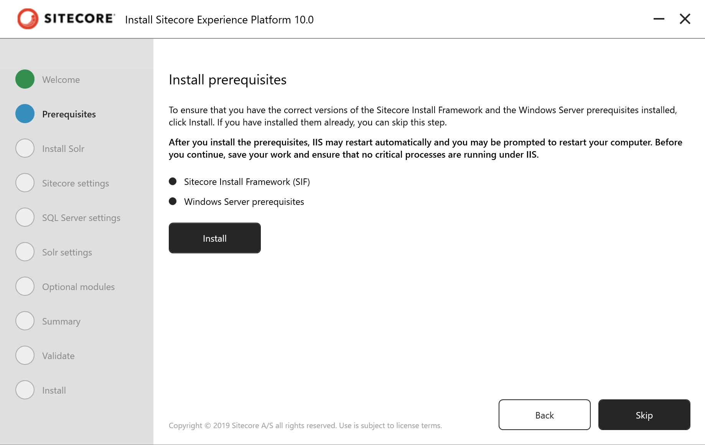
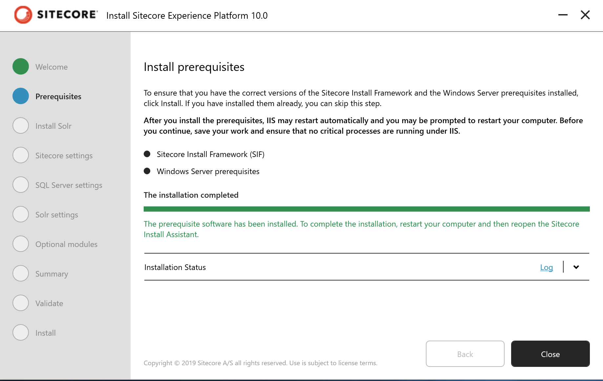

2.3. Sitecore Experience Platform のインストール¶
Sitecore 9.3 で提供する Sitecore Instllation Assistant は Solr も含めて自動的にセットアップをするインストール支援ツールになりました。これにより、 Windows Server と SQL Server がインストールされている環境に対して、簡単にインストールをすることができるようになりました。
今回は以下の環境にインストールをします。
Windows Server 2019 Standard
SQL Server 2019
2.3.1. Sitecore のインストールプログラムの入手¶
今回は Sitecore Install Assistant を利用してインストールを進めていきます。このため、以下の Web サイトからインストールファイルをダウンロードしてください。
Download options for On Premises deployment のグループにある Graphical setup package for XP Single をダウンロードしてください。インストールファイルのダウンロードが完了した、ファイルを展開して次のステップに進みます。
2.3.2. モジュールのインストール¶
この手順に関しては、１つの環境で初回のみ実行するだけで完了です。すでに別の Sitecore をインストールしている場合は、スキップしてください。
Sitecore Install Assistant を立ち上げます。これはダウンロードをしたファイルを展開してください。ここでは、 c:\projects\sif に展開します。

setup.exe をダブルクリックすると、インストーラーが立ち上がり以下のような画面となります。

Start のボタンをクリックすると、モジュールのインストール画面になります。
Install のボタンをクリックして、必要なモジュールをインストールしてください。

インストールが完了すると、Next のボタンが有効になります。
2.3.3. Solr のインストール¶
Sitecore Install Assistant は 9.3 より Solr のインストールにも対応しています。Java ランタイムなども一緒にインストールされます。なお、Solr を別途インストール済の場合は、スキップできます。
まず、以下の項目が表示されます。

パラメータ |
入力値 |
説明 |
|---|---|---|
Solr port |
8983 |
Solr が利用するポート番号 |
Windows service and path prefix |
93 |
インストールをする Solr の Prefix |
Install path |
c:solr |
インストール先 |
2.3.4. インストールの開始¶
モジュールのインストールが完了すると、次は Sitecore のインストールとなります。
2.3.4.1. Sitecore Settings¶
インストールをする際の設定を記載します。以下の項目を入力してください。以下の値は例となります。
パラメータ |
入力値 |
説明 |
|---|---|---|
Installation/Solution prefix |
93 |
DB 名、サイト名で利用 |
Sitecore admin password |
管理者のパスワードの設定 |
|
Sitecore license file |
license.xml へのパス |
ライセンスファイル |

2.3.4.2. SQL Server settings¶
続いてインストールをしている SQL Server に関する設定を入力します。
パラメータ |
力値 |
説明 |
|---|---|---|
SQL Server instance |
(local) |
サーバーのインスタンス名 |
SQL Server admin user name |
sa |
管理者ユーザー名 |
SQL Server admin password |
管理者パスワード |
2.3.4.3. Solr の設定¶
すでにインストールしている Solr の設定を入力していきます。ここでは、[Solr 7.5 のインストール](./solr.md) でインストールしているパラメータを利用しています。
パラメータ |
入力値 |
説明 |
|---|---|---|
Solr service URL |
Solr の URL |
|
Solr file system root |
C:Solr93Solr-8.1.1 |
Solr インストール先のディレクトリ |
Solr Windows service name |
93Solr-8.1.1 |
サービスの名前 |

{kind=link}
{kind=link}
{kind=link}
{kind=link}
{kind=link}
{kind=link}
{kind=link}